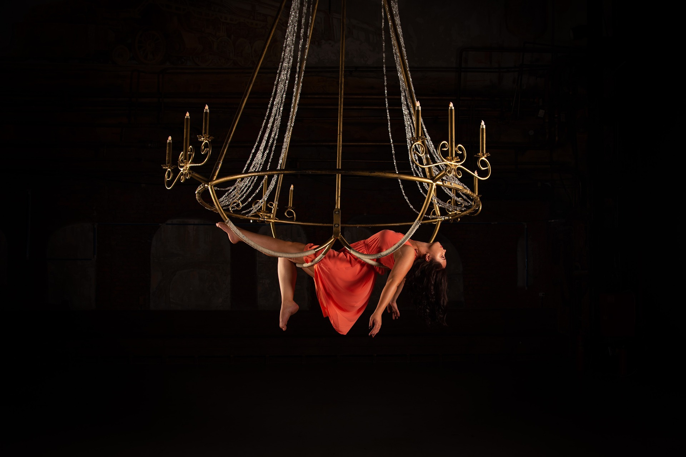
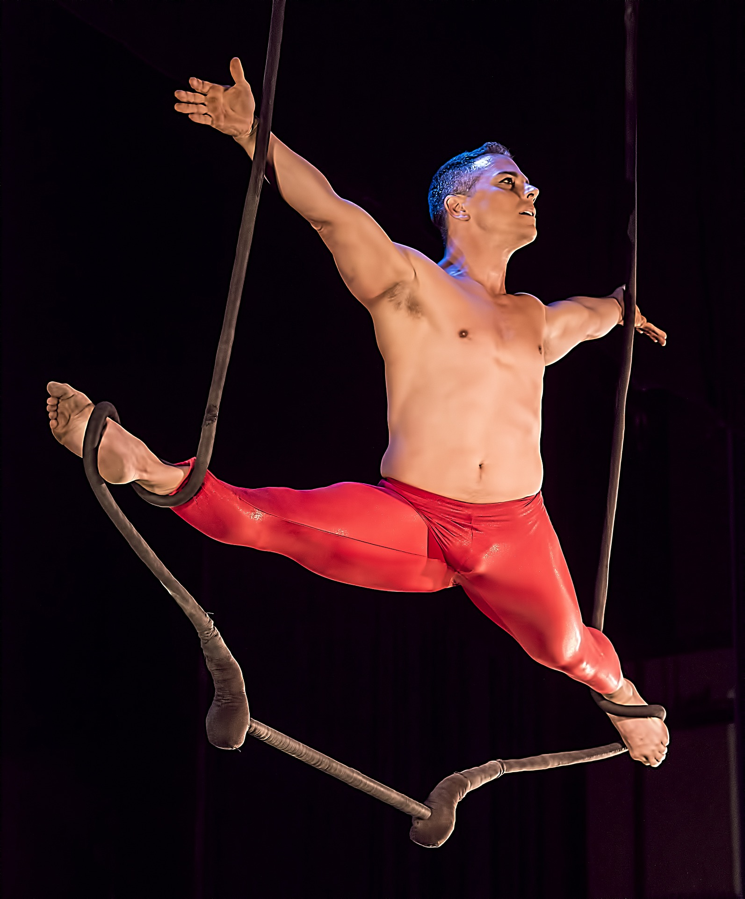
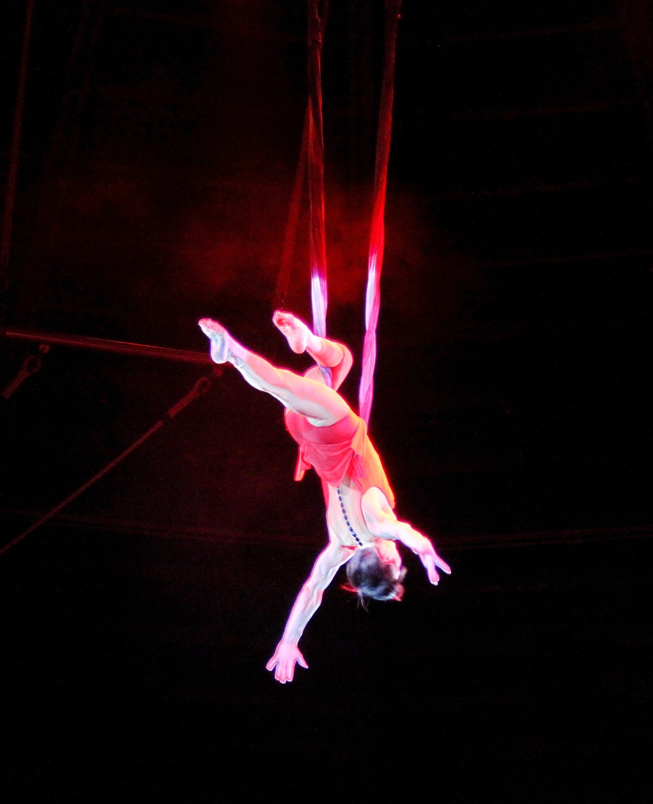
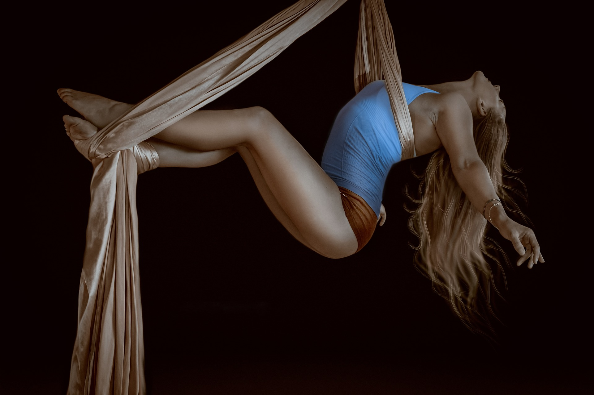

1 / 6

Aerialist 1
2 / 6
Aerialist 2
3 / 6

Aerialist 3
4 / 6

Aerialist 4
5 / 6

Aerialist 5
6 / 6

Aerialist 6
Aerialist 1
Aerialist 2
Aerialist 3
Aerialist 4
Aerialist 5
Aerialist 6
A bay- area based circus school & entertainment company, Skyhigh Odditorium has been offering its pentacle of inclusivity and creative services since 2012. Founded by international circus legend, Drago Nesa (previously known as Madamn Burnz)” the company offers individual and group circus performances, reoccurring classes in aerial acrobatics and fire, event production, and multimedia services for artists in the form of video, music, & photo. The Odditorium is open and home to all genders, races, ethnicities, sexualities, body types, and inclusive belief systems, especially those part of the LGBTQAI+ movement. Part of the mission statement is that everyone should be celebrated for who they truly are, and be able to express themselves in a judgement free zone. The community is proud to represent physical and metaphysical diversity, and strives to make space for the beautiful misfits.
A true spectacle performance, aerial art presents a fantastical fusion of graceful athleticism & risque art. Performed high in the air, aerialists perform feats of strength and grace with looking creative, glamorous, and totally horrific. The Odditorium offer shows, videos and installations utilizing unique and rare fusions of circus apparatus including mouth suspension, body burns, aerial chains, silks, rope, hoop, with blends of drag and fire. Since 2012, aerialists from the Odditorium have showcased their work at various festivals, venues, clubs, and media projects through out the West Coast.
Inspired by the illusion of fire eating with modern day circus, Drago extends fire to the community while preserving the history and mystery of Fire Arts. Dragons make great party entertainment, and are available from the Odditorium in the form of solo and duo fire eating performances, pyro magic, and fire dance. Fire performances from Odditorium performers are available in the forms of fire eating and breathing, body burns, aerial fire eating, and prop based dance, in the form of group, duo and solo acts.
Skyhigh’s in-house performance troupe, the Dragonettes are the heart & core of the Skyhigh aerial program. Developing individual and group performances on aerial silks, lyra, sling, chains, pole and rope, the Dragonettes are a dedicated team of diverse talent. Beginning with Skyhigh’s in house student showcases, short films, theater shows, and productions, The Dragonettes have grown to become resident performers with various groups such as Princess SF, The Menagerie, and UMA Gallery. They have performed as a group locally as well as toured the California, performing in Nevada City, Sacramento & Santa Cruz. The Dragonettes’ are the resident group of performers and artist who make all Skyhigh events possible. They are constantly evolving their artistry and reaching new heights.